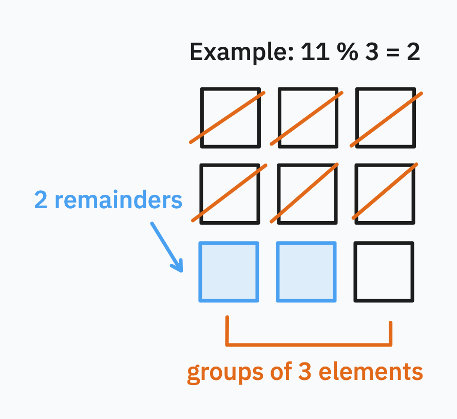

Scope:
A variable declared anywhere outside a function is in the (module’s) global scope, and a variable declared inside a function is in that function’s scope. Blocks like conditionals and loops don't have their own scope.
a and b: only True if both a and b are Truea or b: True as long as just a or just b is Truenot a: returns True if a is False and False if a is True== (equal) and != (not equal)list() creates new listrange(start, stop, step) creates rangealist[idx] index listalist.append(val) add item to listalist.extend(anotherlist) append another list to listalist.index(val) finds the index of first occurence of item in listalist.insert(val) inserts val into the list before the item at indexalist.pop() removes last item (and returns it too)alist.reverse() reverses orderalist.sort() sort list in place (this doesn't return anything!)alist.remove(val) removes first item found that matches valmax(alist) and min(alist) do what you'd think they do (return largest/smallest element)alist + blist concatenates two listalist * n a new list that returns alist n timesval in alist checks if value is in listlen(alist) number of items in listsum(alist) sum of items in list (if it contains numbers)
booleans on lists depend on the first item that differsastr.join(iter) a new string by joining an iterable (e.g. list) of strings with astr between each itemastr.split(sep) splits by whitespace (default) or by provided separator sepastr.replace(a, b) replace a with b in stringastr.startswith(), astr.endswith(), astr.title(), astr.upper(), astr.lower() do as you'd expectastr.isalpha() is alphabetical, astr.isdecimal(), astr.isnumeric() and astr.isdigit() do as you'd expectastr.find() results in finding the index of the first occurence of a substring; -1 if the substring is not foundastr.strip() this one works like this:x = " Hellooo World! "Hellooo World - note how all the whitespace characters on the left and right are removedx.lstrip() and x.rstrip()Tuples have much of the same functionality with lists, with two exceptions:
atuple[idx], they do not support write indexingmin() and max() still work as do val in atuple but what doesn't work is sort()for item in ls for iterating over elementsfor i in range(len(ls)) for iterating between 0 and len - 1 (can use custom step)File objects are created by open(). File objects store the current pointer to the line being read. f.readline() reads one line forward in the file and advances the pointer. f.read() reads the entire remainder of a file to memory. At the end of a file, both return empty strings. f.close() closes the file stream.
Static web pages can be opened using the urllib.request page and the request.urlopen() function - this returns a file object.
set <= other tests that set is a subset of otherset < other tests that set is a subset of other but set != otherset >= other tests that set is a superset of otherset > other tests that set is a superset of other but set != otherset | other or set.union(other) combines all elements of set and otherset & other or set.intersection(other) finds all elements both in set and otherset - other or set.difference(other) finds elements in set that are not in otherset ^ other or set.symmetric_difference(other) finds elements in set or other but not bothset.add(val) and set.remove(val) do as you'd expectKeys list and values list into dictionary:
dict(zip(keys_list, vals_list))
Invert dictionary:
inv_map = {v: k for k, v in my_map.items()}
Loop through dictionary:
for k, v in my_map.items():
print(k, v)
Dictionary comprehension:
# squares of evens from 0 to 4
squares = { x: x ** 2 for x in range(5) if x % 2 == 0 }
Merge dictionaries: dict1.copy().update(dict2)
Dunder methods
__init____add____mul____div____pow____str____eq____ne____lt____gt____le____ge__